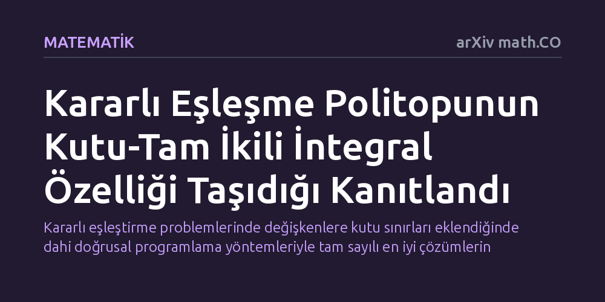

MATEMATIK · arXiv math.CO · 2026-10-13
Araştırmacılar, iki taraflı tercihlere dayalı kararlı eşleşme politopunun kutu-tam ikili integral özelliğine sahip olup olmadığını inceledi. Politopun sıra politopuna dönüştürülmesi ve matris analizleri sayesinde, bu geometrik yapının ve Rothblum doğrusal denklem sisteminin kutu-tam ikili integral olduğu matematiksel olarak kanıtlandı.
Kararlı eşleştirme problemlerinde değişkenlere kutu sınırları eklendiğinde dahi doğrusal programlama yöntemleriyle tam sayılı en iyi çözümlerin bulunabileceğini kuramsal olarak güvenceye alır.

Kararlı eşleşme problemi, iki ayrı grubun üyelerini birbirlerinin tercihlerine göre eşleştirmeyi amaçlar. Tıp mezunlarının hastanelere yerleştirilmesinden öğrencilerin okullara dağıtılmasına kadar birçok alanda kullanılan bu modelde temel ilke, eşleşmemiş herhangi bir çiftin mevcut durumlarından memnuniyetsizlik duyup kendi aralarında yeni bir anlaşma yapmaya istekli olmamasıdır. Bu koşul sağlandığında sistem kararlı kabul edilir.
Matematikçiler, olası tüm kararlı eşleşmeleri geometrik birer nokta olarak kabul edip bu noktaların oluşturduğu çok boyutlu geometrik şekli, yani kararlı evlilik politopunu inceler. Rothblum, bu politopu doğrusal eşitsizlikler sistemiyle tanımlamayı başarmıştı. Buradaki temel soru, söz konusu geometrik yapının optimizasyon algoritmaları açısından ne kadar elverişli ve düzenli özellikler sergilediğiydi.
Ayrık optimizasyon problemlerini çözerken en büyük zorluk, aranılan sonucun kesirli değil tamsayılı olmasını sağlamaktır. Doğrusal programlama yöntemleri sürekli uzaylarda çok hızlı çalışsa da tamsayı şartı eklendiğinde problemler genellikle zorlaşır. Ancak incelenen sistem 'tam ikili integrallik' özelliğine sahipse, ikili problemin en iyi çözümleri de doğal olarak tamsayı çıkar ve çözüm büyük bir verimlilikle bulunur.
Daha önce Kiraly ve Pap, Rothblum'un denklem sisteminin tam ikili integral olduğunu kanıtlamıştı. Fakat değişkenlere bağımsız alt ve üst sınırlar (kutu sınırları) eklendiğinde bu düzenin korunup korunmadığı, yani sistemin daha güçlü bir özellik olan 'kutu-tam ikili integrallik' taşıyıp taşımadığı bilinmiyordu. Bu durum, eşleşme modellerinde kapasite veya kota gibi ek kısıtlamalar devreye girdiğinde matematiksel yapının nasıl davranacağına dair önemli bir belirsizlik yaratıyordu.
Michele Barbato ve Emiliano Lancini, karmaşık eşitsizliklerle doğrudan boğuşmak yerine problemi daha iyi bilinen bir yapıya dönüştürme yolunu seçti. Yazarlar, kararlı evlilik politopunun kısmi sıralı kümelerle kurulan bir 'sıra politopu' olarak afin biçimde temsil edilebileceğini kullandı.
Araştırmacılar bu temsili, kutu-tam ikili integral politopların matris karakterizasyonuyla birleştirdi. Yapılan matris analizleri sonucunda, kısıt matrisinin gerekli cebirsel ve kombinatoryal koşulları eksiksiz sağladığı gösterildi. Böylece Rothblum'un tanımladığı doğrusal sistemin kutu-tam ikili integral olduğu matematiksel olarak kesinleşti.
Elde edilen sonuç, kararlı eşleşme politopunun cebirsel ve geometrik olarak düşünülenden daha zengin ve dayanıklı bir yapıya sahip olduğunu kanıtlıyor. Değişkenlere kutu sınırları eklense dahi ikili tamsayılığın bozulmaması, bu alandaki optimizasyon teorisini sağlamlaştırmakta ve kombinatoryal problemlerin sınırlarını daha net çizmektedir.
Bununla birlikte, çalışma pratik bir yazılım algoritması ya da hesaplama süresi ölçümü sunmayan saf bir kuramsal matematik ispatıdır. Ayrıca metin henüz bir önbaskı durumundadır; ispatın adımları bağımsız hakemler tarafından incelenip onaylanana dek bulgunun matematik dünyasında nihai olarak kabul görmesi için zaman gerekmektedir.